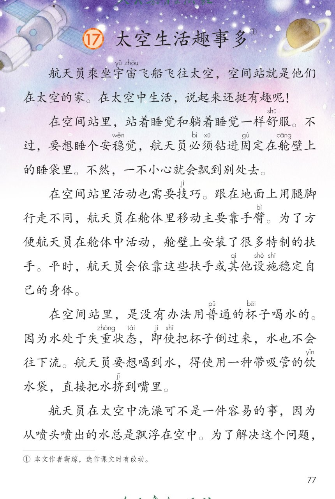
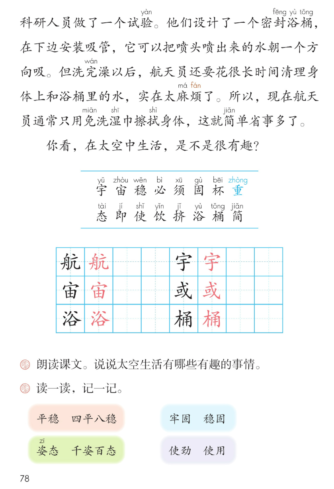

×
🔊 手机听不到声音怎么办？
① 先把手机
媒体音量调大 ，确认没开静音、没连蓝牙耳机；在微信里打开的，点右上角「⋯ → 用浏览器打开」。
② 还是没声音？到应用商店免费下载
Microsoft Edge 浏览器 （它自带朗读发声），用它打开本页面就能出声。
③ 换了 Edge 仍然没声音，说明这部手机的
硬件/系统不支持 网页朗读（多为老旧机型）；近几年买的新手机一般都能正常播放。
→ 打开声音自检
🚀 第 17 课《太空生活趣事多》· 有声图文带读
统编版语文 · 第六单元·阅读 · 课本 第 77~78 页 · 作者：靳琼
课文 6 段 · 共 18 句
会认字 16
会写字 6
听写词 10
近义词 4 组
深入理解 8 题
本课本领 朗读·提问·了解太空
🎧 五步学（可随时点任意一句、一个字、一个词单独听）： ① 听读课文 ——六段科普散文，一句一句读，读到哪一句哪一句发光；开「跟读」后读完一句留时间让你自己读。② 学字词 ——16 个会认字、6 个会写字（含书写提示），点一个读一个。③ 词语·听写·造句 ——先读太空词语积累，再听写 10 个词（读两遍→你写→报答案→听示范句），最后听 4 组近义词辨析。④ 深入理解 ——8 道题（认知 / 理解 / 运用 / 拓展），开放题答案不唯一，先想后看。⑤ 分节朗读·想象画面 ——按五步想象太空生活的画面，再听六位朗读者分段读这篇课文。
📚 第六单元·阅读（本课定位）： 第15课《雷雨》 → 第16课《要是你在野外迷了路》 → 第17课《太空生活趣事多》 → 语文园地六
点段前的 ①②③④⑤⑥ 听整段
🔁 跟读模式：关
👁 隐藏注音（自测用）
注音只标本课要认、要写的字和课本明确标了音的字，读音来自课本第 78 页生字表
🎤 朗读要求（老师标准） 宇 读第三声，宙 读第四声，稳 读第三声，必 读第四声，须 读第一声，固 读第四声，杯 读第一声，重 在这里读第四声，态 读第四声，即 读第二声，使 读第三声，饮 读第三声，挤 读第三声，浴 读第四声，桶 读第三声，简 读第三声；不添字、不漏字 ：逗号停得短，句号停得长，一句一句读清楚；读出好奇与有趣 ：太空里的每件事都和平常不一样，读出新鲜劲儿；结尾像在问大家 ：是不是很有趣，句尾轻轻上扬。
①
航天员乘坐宇yǔ 宙zhòu 飞船飞往太空，空间站就是他们在太空的家。
在太空中生活，说起来还挺有趣呢！
②
在空间站里，站着睡觉和躺着睡觉一样舒shū 服。
不过，要想睡个安稳wěn 觉，航天员必bì 须xū 钻进固gù 定在舱cāng 壁上的睡袋里。
不然，一不小心就会飘到别处去。
③
在空间站里活动也需要技jì 巧。
跟在地面上用腿脚行走不同，航天员在舱cāng 体里移动主要靠手臂bì 。
为了方便航天员在舱cāng 体中活动，舱cāng 壁上安装了很多特制的扶手。
平时，航天员会依靠这些扶手或其qí 他设shè 施shī 稳wěn 定自己的身体。
④
在空间站里，是没有办法用普pǔ 通的杯bēi 子喝水的。
因为水处于失重zhòng 状态tài ，即jí 使shǐ 把杯bēi 子倒过来，水也不会往下流。
航天员要想喝到水，得使shǐ 用一种带吸管的饮yǐn 水袋，直接把水挤jǐ 到嘴里。
⑤
航天员在太空中洗澡可不是一件容易的事，因为从喷头喷出的水总是漂浮在空中。
为了解决这个问题，科研人员做了一个试验yàn 。
他们设shè 计了一个密封fēng 浴yù 桶tǒng ，在下边安装吸管，它可以把喷头喷出来的水朝一个方向吸。
但洗完wán 澡以后，航天员还要花很长时间清理身体上和浴yù 桶tǒng 里的水，实在太麻má 烦fán 了。
所以，现在航天员通常只用免miǎn 洗湿shī 巾擦拭shì 身体，这就简jiǎn 单省事多了。
⑥
你看，在太空中生活，是不是很有趣？
🤔 想一想（点我可跳过）
点一张图，听读整页

第 77 页 · 课文前四段

第 78 页 · 课文末段·生字表·课后题
📖 人教版《语文》二年级下册 · 课本第 77~78 页 · 图片仅供个人学习，版权归人民教育出版社所有
点一个字，听读音、词语和课文里的句子
结构、部首、笔画与书写提示为通用规范，供参考，以教材和老师的指导为准
航
háng
航天 · 航行
10 画 · 左右（舟）
舟字旁写窄，亢字写稳
宇
yǔ
宇宙 · 宇航员
6 画 · 上下（宀）
宝盖头写宽，于字写稳
宙
zhòu
宇宙
8 画 · 上下（宀）
宝盖头写宽，由字写稳
或
huò
或者 · 或许
8 画 · 半包围（戈）
斜钩写长，撇点写正
浴
yù
浴桶 · 浴室
10 画 · 左右（氵）
三点水写窄，谷字写稳
桶
tǒng
水桶 · 浴桶
11 画 · 左右（木）
木字旁写窄，甬字写稳
点一行，听词语和课后题的答案
📖 课后题（课本第 78 页照录） ：① 朗读课文。说说太空生活有哪些有趣的事情。 ② 读一读，记一记（平稳—四平八稳 / 牢固—稳固 / 姿态—千姿百态 / 使劲—使用）。
趣事 趣事 有趣
安稳 安稳 平稳
失重 失重 重量
漂浮 漂浮 飘扬
读两遍 → 你在纸上写 → 报答案 → 听示范句
准备听写 · 共 10 个词
○ ○ ○
点下面的「开始听写」，听到一个词就写一个词。
▶ 开始听写
🔁 再读一遍
👁 看答案
点词听读，点句子听示范句，再自己说一句
1 航天员 会写字 · 航
示范句：航天员乘坐宇宙飞船飞往太空。
✏️ 我也能说：谁像航天员一样
2 宇宙 会写字 · 宇
示范句：宇宙飞船飞往太空。
✏️ 我也能说：什么在宇宙里
3 宇宙飞船 会写字 · 宙
示范句：航天员乘坐宇宙飞船飞往太空。
✏️ 我也能说：什么像宇宙飞船
4 或者 会写字 · 或
示范句：航天员会依靠扶手或其他设施。
✏️ 我也能说：什么或者什么
5 浴桶 会写字 · 浴
示范句：他们设计了一个密封浴桶。
✏️ 我也能说：什么样的浴桶
6 水桶 会写字 · 桶
示范句：浴桶里要放很多水，像一个水桶。
✏️ 我也能说：什么样的水桶
7 安稳 课文词 · 稳
示范句：要想睡个安稳觉，得钻进睡袋里。
✏️ 我也能说：什么很安稳
8 舒服 课文词 · 舒
示范句：站着睡觉和躺着睡觉一样舒服。
✏️ 我也能说：什么很舒服
9 饮水袋 课文词 · 饮
示范句：得使用一种带吸管的饮水袋。
✏️ 我也能说：什么像饮水袋
10 漂浮 课文词 · 漂
示范句：喷出的水总是漂浮在空中。
✏️ 我也能说：什么漂浮在哪里
相同点 / 不一样在哪 / 各造一句
平稳 — 四平八稳
相同：都表示稳当、不摇晃 。
不一样：平稳 多写东西或生活安安稳稳；四平八稳 是成语，形容非常稳、不出差错。
平稳：飞机平稳地降落了。
牢固 — 稳固
相同：都表示结实、不容易松动 。
不一样：牢固 强调结合得紧、不容易坏；稳固 强调安稳、不容易动摇。
牢固：睡袋固定得很牢固。
姿态 — 千姿百态
相同：都和样子、姿势 有关。
不一样：姿态 指一种姿势样子；千姿百态 形容姿态非常多、各种各样。
姿态：她跳舞的姿态真美。
使劲 — 使用
相同：都带有使 字，但意思不同。
不一样：使劲 是花力气、用力气；使用 是用工具、物品。
使劲：他使劲把水挤到嘴里。
必须（一定要） 航天员必须钻进固定在舱壁上的睡袋里
一不小心 一不小心就会飘到别处去
即使…也… 即使把杯子倒过来，水也不会往下流
是不是（问一问） 在太空中生活，是不是很有趣？
标「答案不唯一」的题，说得有道理都对
认知 课文写了太空生活中的哪些有趣的事情？看解析
🤔 想一想
解析：
睡觉、活动、喝水、洗澡
睡袋、扶手、饮水袋、湿巾
太空生活处处有趣
认知 航天员在空间站里是怎么睡觉的？看解析
🤔 想一想
解析：
站着睡，一样舒服
钻进固定在舱壁上的睡袋
不然会飘到别处去
理解 在空间站里活动，为什么主要靠手臂？看解析
🤔 想一想
解析：
失重，跟地面行走不同
主要靠手臂
舱壁上有特制的扶手
理解 为什么不能用普通的杯子喝水？航天员是怎么喝到水的？看解析
🤔 想一想
解析：
水失重，不往下流
带吸管的饮水袋
直接把水挤到嘴里
理解 洗澡的问题是怎么解决的？为什么后来改用免洗湿巾？看解析
🤔 想一想
解析：
密封浴桶下边装吸管
要花很长时间清理水
用免洗湿巾擦身体
运用 用“必须”说一句话。看解析
🤔 想一想
解析：
必须加一定要做的事
安全、学习的事都可以
🌈 答案不唯一，说得有道理都对
运用 用“即使……也……”说一句话。看解析
🤔 想一想
解析：
即使…也…结果不变
条件变了结论不变
🌈 答案不唯一，说得有道理都对
拓展 你还想知道太空生活中的哪些事？看解析
🤔 想一想
解析：
吃饭、锻炼、看星空都可以
写下来查资料请教大人
🌈 答案不唯一，说得有道理都对
点一步，听这一步
💬 想象支架：先 想太空的家空间站 → 再 想钻进睡袋站着睡 → 接着 想抓扶手靠手臂移动 → 然后 想用饮水袋喝水 → 最后 想用免洗湿巾擦身体。
点一张卡，听这一节的句子
🌈 第1节·朗读者
第1节：航天员乘坐宇宙飞船飞往太空，空间站就是他们在太空的家。
💬 开头一段，读得欢快，突出有趣
🌈 第2节·朗读者
第2节：在空间站里，站着睡觉和躺着睡觉一样舒服。
💬 睡觉一段，读得神奇、有趣
🌈 第3节·朗读者
第3节：在空间站里活动也需要技巧。
💬 活动一段，读得清楚明白
🌈 第4节·朗读者
第4节：在空间站里，是没有办法用普通的杯子喝水的。
💬 喝水一段，读得新奇、有趣
🌈 第5节·朗读者
第5节：航天员在太空中洗澡可不是一件容易的事，因为从喷头喷出的水总是漂浮在空中。
💬 洗澡一段，读得先感叹后佩服
🌈 第6节·朗读者
第6节：你看，在太空中生活，是不是很有趣？
💬 结尾一句，读得自豪，像在邀请你